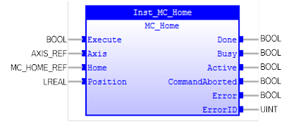
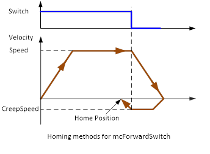
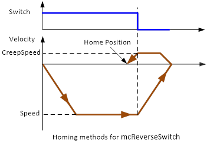
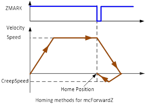
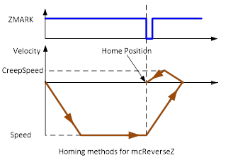
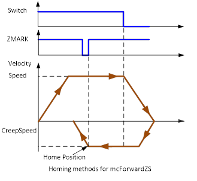
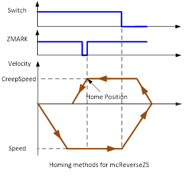
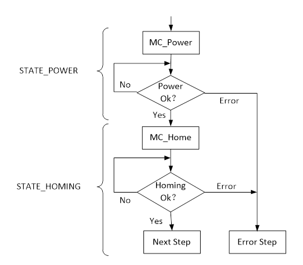

Commands the axis to perform a homing procedure.

MC_Home commands the axis to perform the ‘search home’ sequence. The details of this sequence are selected by the FB’ input parameter MC_HOME_MODE (Home input). ‘Position’ input is used to set the absolute position when reference signal is detected.
MC_Home will change the PLCopen state from ‘Standstill’ to ‘Homing’.
The FB must be called from axis state ‘Standstill’. With a rising edge of ‘Execute’, the FB changes the axis state to ‘Homing’. With completion of homing procedure, the axis state is back to ‘Standstill’.
If there is an error during the homing procedure, the FB will be aborted and the axis state will change to ‘ErrorStop’.
This function block can also be aborted by another function block with the Buffer Mode ‘Aborting’.
There are 6 homing methods for the FB:
1. mcForwardSwitch: The axis moves at the programmed speed forward until the datum switch is reached. The axis then moves backwards at creep speed until the datum switch is reset. The measured position is then set to the defined position.

2. mcReverseSwitch: The axis moves at the programmed speed reverse until the datum switch is reached. The axis then moves at creep speed forward until the datum switch is reset. The measured position is then set to the defined position.

3. mcForwardZ: The axis moves at creep speed forward until the Z marker is encountered. The Measured position is then set to the defined position.

4. mcReverseZ: The axis moves at creep speed in reverse until the Z marker is encountered. The Measured position is then set to the input position.

5. mcForwardZS: The axis moves at programmed speed forward until the datum switch is reached. The axis then reverses at creep speed until the datum switch is reset. It then continues in reverse at creep speed looking for the Z marker on the motor. The position of Axis where the Z input was seen is then set to the defined position.

6. mcReverseZS: The axis moves at programmed speed reverse until the datum switch is reached. The axis then moves forward at creep speed until the datum switch is reset. It then continues forward at creep speed looking for the Z marker on the motor. The position of Axis where the Z input was seen is then set to the defined position.

Make sure the input and output parameters are of data type indicated in the table below.
MC_Home can only start from ‘Standstill’ PLCopen state diagram, otherwise it will generate an error.
It does not allow changing the axis reference when homing procedure is going.
Input ‘Home’ defines the homing motion parameter. This includes ‘HomeMode’ which defines homing mode: mcForwardZ, mcReverseZ, mcForwardSwitch, mcReverseSwitch, mcForwardZS, mcReverseZS.
|
Name |
Data Type |
Description |
|
INPUTS |
||
|
Execute |
BOOL |
Write the value of the parameter at rising edge |
|
Axis |
AXIS_REF |
Reference to the axis |
|
Home |
MC_HOME_REF |
Parameters for homing motion, including homing mode, homing speed, creep speed and acceleration, deceleration, jerk and home switch channel setting during homing motion. |
|
Position |
LREAL |
Absolute position when the reference signal is detected [units] |
|
OUTPUTS |
||
|
Done |
BOOL |
Reference known and set successfully. |
|
Busy |
BOOL |
The FB is not finished and new output values are to be expected. |
|
Active |
BOOL |
Indicates that the FB has control on the axis. |
|
CommandAborted |
BOOL |
‘Command’ is aborted by another command. |
|
Error |
BOOL |
Signals that an error has occurred within the FB. |
|
ErrorID |
UINT |
Error identification. |
Firstly, set the ‘Power’ to TRUE to power Axis0. If there is no error, Axis0 will transfer to ‘StandStill’ state. Secondly, set ‘Home’ to TRUE to start homing procedure of Axis0. Axis0 state will transfer to ‘Homing’ state. Once homing is complete, state will change to ‘StandStill’. The example code uses HomeMode ‘mcReverseZS’ with a ‘Position’ of 0. This means that the current axis position will be home at position 0 units.

|
Example |
|
(* Defines for
MC_Home example *)
|
|
(* Variables declaration *)
VAR
|
|
(* Variables
initial *)
|